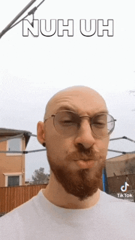

Го по рофлу создадим фан перевод по ультракиллу?.
И таким образом 27 августа 2024 был создан дискорд сервер Собор Сумасшедших
. С тех пор были созданы переводы не только для Ультракилла, но и для других игр. Естественно переводы создавались не на протяжении всех этих месяцев, а своеобразными "рывками". Мы могли работать пару недель, а потом несколько месяцев даже не прикасаться к переводам.
Изначально среди участников Собора были Сыр, я (Исек) и MocketPedic. Формально Mocket создал этот сервер, но с момента его создания он ровным счётом ничего не привнёс в наши переводы (Дима, когда отдашь овнерку?) (UPD 19.02.25 я не могу поверить, но он мне реально отдал овнерку). Но спустя некоторое время у нас произошло пополнение. Четвертым участником стал Пабло, aka легенда дубляжа. Он озвучил все реплики Сизифа, звуки дронов и майндфлееров из Ультракилла. Позже присоединился Мишутка, который тоже в итоге ничего не сделал для нашего проекта (это не отменяет его легендарности). Изначально для него была отведена роль озвучивания рыцаря и совы, но ему не понравились их реплики и он хотел из переписать. Как можно было догадаться этого он так и не сделал. Далее к нам зашёл Стелкер (его приглашение не было согласовано со мной :( ), который и написал реплики для Мишутки. Его пригласили для мемофикации различных записей, реплик и т.д., но после того, как он предложил переименовать 6-ой слой в "гейство", а 7-ой в "супер-гейство" его не просили делать что-либо ещё. В итоге спустя время он по тихому покинул сервер (его корёжило от нашей базы). Последним к нам присоединился Токен. Ему, конечно, собирались выделить роль в переводе, но мне кажется к тому моменту всем уже надоело работать над всем этим, по этому после его захода прогресса практически не было. После захода Стелкера и перед заходом Токена по какой-то причине (мы сами до сих пор не поняли, зачем он это вообще сделал) Mocket решил пригласить Иисуса (не Христа, это был просто ник), который очевидно даже и не собирался работать над модом (мы его кикнули буквально через пару минут после его захода).
Nuh Uh
23 сентября 2024 произошёл инцидент, именуемый Nuh Uh
. Причиной данного инцидента послужили Мишутка и ЭТА гифка

После того, как Миша увидел эту гифку его уже было не остановить... Он смеялся так, как не смеялся никогда. Своим смехом он создал цепную реакцию. От его смеха было крайне трудно не засмеятся (у меня не получилось. В итоге я смеялся столько же, сколько и он сам). В итоге этот спам гифкой Nuh Uh
заметил и Стелкер (он даже не находился в одном голосовом, что и мы). После чего он зашёл к нам и зачем-то попытался остановить нас посредством мута меня и Миши (у нас всех были одинаковые админ. права). Очевидно, что такой смех так просто нельзя было остановить. Возможно этот случай был одной из причин, по которой Стелкер покинул Собор Сумашедших.